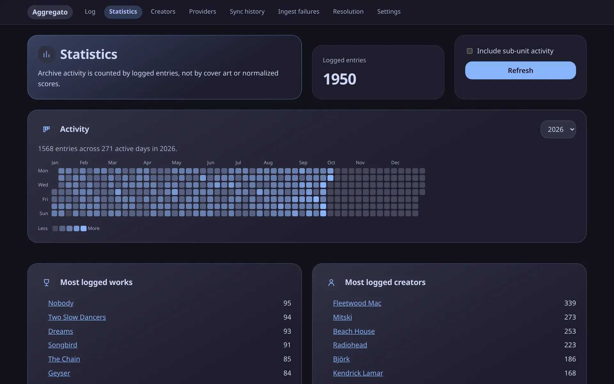
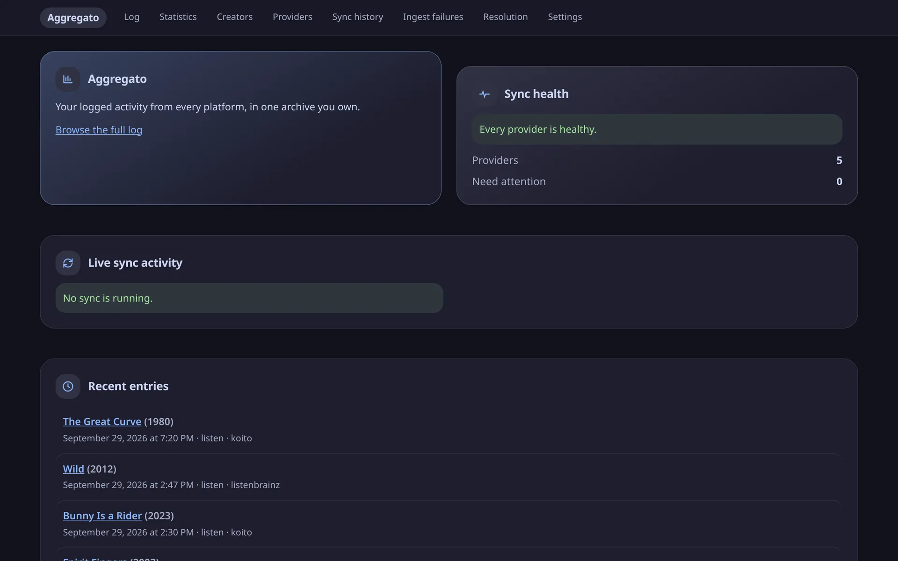
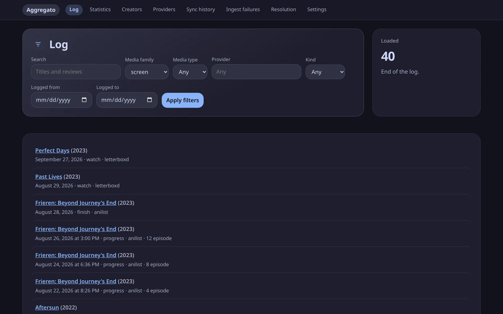
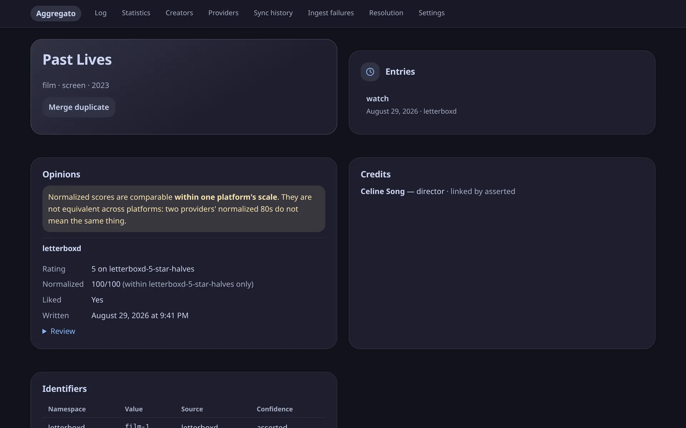
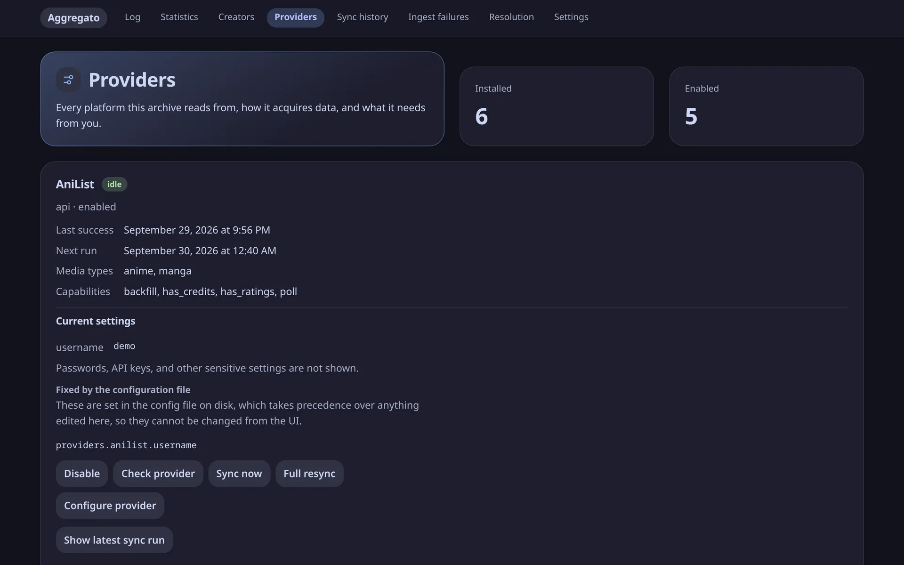
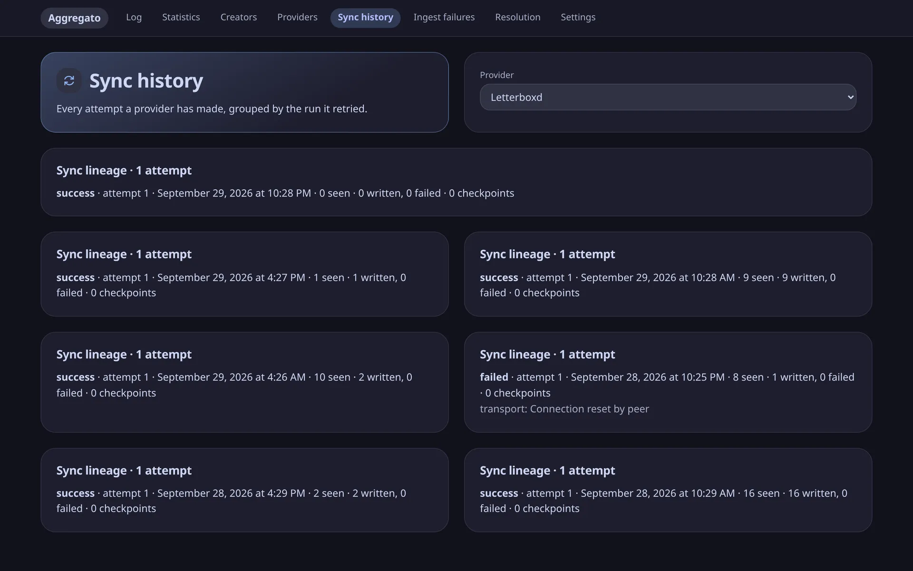

Self-hosted · single-user · archive-first
Every log. One archive.
Aggregato pulls your films, series, books, anime and listens out of the platforms you already log them on, and keeps them in one local database you own.
- Letterboxd films
- ListenBrainz listens
- AniList anime
- Goodreads books
- Koito listens
- Spotify listens

Outbound requests on a fresh install
Nothing leaves until you say so.
A new install talks to no one. Nothing is fetched until you enable a platform yourself, and Aggregato never enriches your data from third-party metadata sources: what you see is what your platforms said, unified and handed back to you.
What it does
Your history, kept honest.
-
One log across every platform
A film you rated on Letterboxd and an album you scrobbled sit in the same timeline, the same search and the same statistics. Search covers titles and your own reviews.
-
Ratings stay what you gave
4 of 5 stars and 8 of 10 are stored as each platform said them, with their scale — not flattened into one invented number.
-
No fabricated precision
An entry logged as “May 2019” stays a month, not a guessed day.
-
Archive-first
Raw payloads are retained, so a fix can be replayed offline, and a platform that changes shape or goes away does not take your history with it. Deletes are tombstones; nothing is silently erased.
-
Yours to take
Download a full archive from Settings at any time. The database is a plain SQLite file in a directory you chose — or Postgres, if your library passes a million entries.
A tour
Six screens, one archive.
Screenshots from a demo archive of about two thousand entries across five platforms. Select any of them to see it full size.
-
01 · DASHBOARD
Is everything working?
The newest entries, and whether every provider is actually syncing. A provider in trouble is named, not reduced to a badge.
- Live sync activity
- Per-provider health

-
02 · LOG
Everything you logged, in order.
Filter by media family, type, platform, kind of entry or date range. Films, anime episodes and books interleave in one timeline.
- Full-text search over titles and reviews
- Stable, cursor-based paging

-
03 · STATISTICS
A year at a glance.
An activity heatmap of every entry, plus your most logged works and creators — counted by what you logged, not by normalized scores.
- Per-year activity
- Top works and creators
-
04 · WORK
Every opinion, on its own scale.
A work shows each platform's rating as given, its 0–100 value within that scale only, your review, the credits in the platform's own words, and every identifier it came with.
- Merge and split duplicates
- Identity links you can audit

-
05 · PROVIDERS
Configure, check, sync.
Each platform's form is generated from what it actually needs. Secrets are never shown again, and settings pinned by your config file say so.
- Check credentials without syncing
- Sync now or full resync

-
06 · SYNC HISTORY
What ran, and what went wrong.
Every attempt a provider made, grouped by the run it retried, with counts and the class of any error — so a broken platform looks broken instead of looking empty.
- Retries grouped by lineage
- Ingest failures kept with their payloads



Bundled platforms
Where it reads from.
Each platform is a plugin that runs in its own short-lived process with no database access and a rate-limited HTTP client it cannot bypass. A crash or a hang in one never touches the others.
- KoitoListensServer URL and API keyevery 5 min
- ListenBrainzListens — or any compatible server, such as MalojaUsername and user tokenevery 15 min
- AniListAnime and manga, with ratingsUsername, plus an OAuth token for private listshourly
- LetterboxdFilms and series, with ratings and reviewsUsername or public RSS URLevery 6 h
- GoodreadsBooks, with ratings and reviewsPublic profile or RSS URLdaily
- SpotifyRecently played tracksApp client ID and secret, plus a refresh tokenevery 15 min
Anything else is a plugin away — see writing a provider. No CAPTCHA or anti-bot circumvention, ever: a blocked platform is marked degraded and left alone.
Set it up
Running in three commands.
One named volume. No database server, no message broker, nothing else to run. Images are published for amd64 and arm64.
- Docker
- Docker Compose
- ≈ 5 minutes
-
Start it
Clone the repository, generate a token and bring the stack up. Keep the token — it is your login.
$ git clone https://github.com/minipps/aggregato && cd aggregato $ export AGGREGATO_TOKEN=$(openssl rand -hex 32) # keep this $ docker compose -f docker/compose.yml up -dSet
AGGREGATO_FRONTEND_PORTif port 8000 is already taken, andAGGREGATO_VERSIONto pin a release. -
Sign in
Open localhost:8000 and paste the token. The frontend container serves the app and proxies
/apito the backend, which runs both the API and the scheduler. -
Connect a platform
On the Providers screen:
- Pick a platform, press Configure provider, fill in the form and Save configuration.
- Press Enable, then Sync now for the first pass.
- That's it. The scheduler polls at the platform's own interval from here on.
Your log fills in as syncs land: Log is the timeline, Statistics the summaries, Sync history what ran, and Settings holds retention, storage and the archive download.
-
Or keep it all in a file
Anything the UI can set, YAML can too. Point
AGGREGATO_CONFIGat it;${VAR}references resolve at read time and are never written back or returned by the API.providers: listenbrainz: username: your-name token: ${LISTENBRAINZ_TOKEN} letterboxd: username: your-name goodreads: profile_url: https://www.goodreads.com/user/show/your-idA broken block disables that one platform, never the rest. Want to let others browse? Set
AGGREGATO_READONLY_TOKEN— the server refuses its writes, not just the buttons.
Your data lives in /data on the aggregato-data volume and survives restarts and upgrades. docker compose down --volumes deletes it — that is the one command to be careful with. For everything else, see the operations guide.